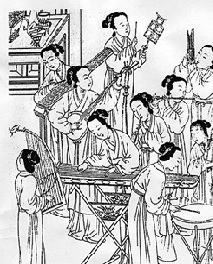

Inicio de la música en China
Desde los tiempos más antiguos, en China la música era tenida en máxima consideración. Todas las dinastías le dedican un apartado especial. Aún hoy la música China está impregnada de la tradición secular, legendaria y misteriosa de una de las filosofías más antiguas del mundo. br
Representación de una cadencia típica en la música china.
La explicación acústica que sustenta este sistema musical es el de la quinta soplada. Si soplamos con fuerza en un tubo cerrado, correspondiente, por ejemplo, a fa4 se obtendrá una quinta justa superior, es decir do5. Pero este do5 también se puede obtener soplando normalmente en otro tubo que mida dos tercios de la longitud del primero.
Al cortarse un tercer tubo, que mida dos tercios de do5 se obtendrá una quinta justa superior a do5, es decir, sol5. Como este sonido está muy alejado de huang-chung, se duplica su longitud y se obtiene sol4, dado que la relación doble corresponde a la octava.
Pero los teóricos chinos se dieron cuenta de que podían obtener ese mismo sol4, cortando un tubo que midiera cuatro tercios de do5.
Trabajando así, y siempre sucesivamente con las relaciones dos tercios y cuatro tercios, llegaron a la escala de los 12 lu, con la cual se alcanza la octava. No la octava justa, por cierto, ya que la razón 1:2 nunca equivale a la ecuación 12 2/3. Obtuvieron entonces, una escala dodecafónica de temperamento desigual.
El peligro de esta escala cíclica es que, por más precauciones que se adopten, las fracciones se hacen cada vez más complicadas e irreductibles a números enteros. Si otorgamos el número ochenta y uno al huang-chung y le aplicamos el principio cíclico (2/3-4/3) al llegar al sexto lu comienzan números con fracciones, y cada vez se hacen más complicadas las ecuaciones a realizar: 81-54-72-48-64-42,666-56,888-etc., meros lu para su escala usual.
Sistema tonal chino tradicional
En el siglo IV a. C. los teóricos chinos trataron de archivar las quintas para alcanzar la octava, es decir, intentaron el temperamento igual, pero solo en el año 1596 el príncipe Tsai-Yu propone afinar los tubos según un principio equivalente al temperamento igual.
Cada vez que un tubo masculino produce uno femenino, el masculino, es esposo y el femenino esposa. Cada vez que un tubo femenino produce uno masculino, el tubo femenino es la madre y el masculino el hijo.
Los cinco primeros sonidos del ciclo de quintas constituyen la escala usual básica, pentatónica anhemitonal (sin semitonos).